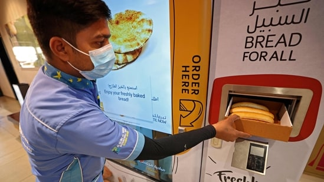

Published on Sep 27, 2022 04:51 PM IST
Dubai: Ten vending machines were installed last week in supermarkets, with a computer touch screen allowing people to select different types of bread.
 1, 2, 3, 4 new windowA man collects items from a vending machine that gives out free bread in Dubai.(AFP)
With the cost of living surging, free hot bread distribution for the poor has been introduced in Dubai, a rich Gulf emirate where millionaires rub shoulders with hard-working migrants.
The city of skyscrapers soaring above the desert, which imports almost all of its food, has been impacted by rapidly rising consumer prices, a global trend exacerbated by Russia's invasion of Ukraine.
Ten vending machines were installed last week in supermarkets, with a computer touch screen allowing people to select different types: loaves for sandwiches, pitta bread or flat Indian-style chapatis.